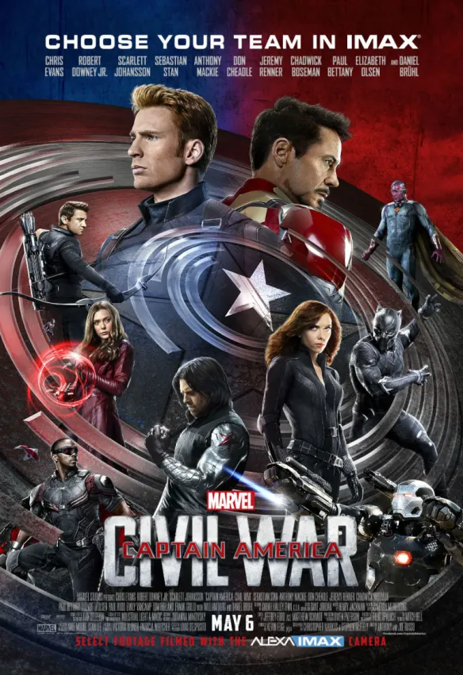
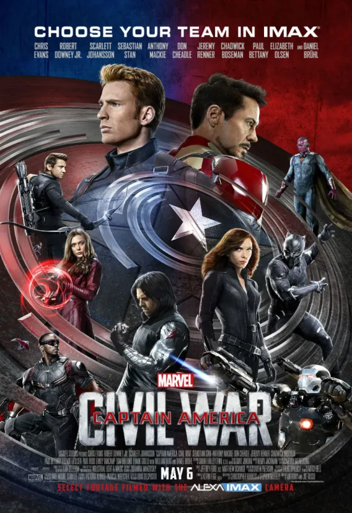

Los vengadores
Los Vengadores de Marvel, conocidos como The Avengers en inglés, son un equipo de superhéroes que apareció por primera vez en los cómics de Marvel en 1963, creado por el escritor Stan Lee y el dibujante Jack Kirby. El equipo es una respuesta de Marvel a la Liga de la Justicia de DC Comics, y se describe como un grupo de héroes "más poderosos de la Tierra" que se reúnen para combatir amenazas que ningún superhéroe individual podría enfrentar solo.


 
